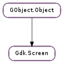

| Subclasses: | GdkX11.X11Screen |
|---|
| static | get_default() |
| static | height() |
| static | height_mm() |
| static | width() |
| static | width_mm() |
| get_active_window() | |
| get_display() | |
| get_font_options() | |
| get_height() | |
| get_height_mm() | |
| get_monitor_at_point(x, y) | |
| get_monitor_at_window(window) | |
| get_monitor_geometry(monitor_num) | |
| get_monitor_height_mm(monitor_num) | |
| get_monitor_plug_name(monitor_num) | |
| get_monitor_scale_factor(monitor_num) | |
| get_monitor_width_mm(monitor_num) | |
| get_monitor_workarea(monitor_num) | |
| get_n_monitors() | |
| get_number() | |
| get_primary_monitor() | |
| get_resolution() | |
| get_rgba_visual() | |
| get_root_window() | |
| get_setting(name, value) | |
| get_system_visual() | |
| get_toplevel_windows() | |
| get_width() | |
| get_width_mm() | |
| get_window_stack() | |
| is_composited() | |
| list_visuals() | |
| make_display_name() | |
| set_font_options(options) | |
| set_resolution(dpi) |
| Name | Type | Flags | Description |
|---|---|---|---|
| font-options | int | r/w | The default font options for the screen |
| resolution | float | r/w | The resolution for fonts on the screen |
| Name | Parameters | Return | Description |
|---|---|---|---|
| composited-changed | The ::composited-changed signal is emitted when the composited status of the screen changes | ||
| monitors-changed | The ::monitors-changed signal is emitted when the number, size or position of the monitors attached to the screen change. Only for X11 and OS X for now. A future implementation for Win32 may be a possibility. | ||
| size-changed | The ::size-changed signal is emitted when the pixel width or height of a screen changes. |
Bases: GObject.Object
Gdk.Screen objects are the GDK representation of the screen on which windows can be displayed and on which the pointer moves. X originally identified screens with physical screens, but nowadays it is more common to have a single Gdk.Screen which combines several physical monitors (see Gdk.Screen.get_n_monitors ()).
Gdk.Screen is used throughout GDK and GTK+ to specify which screen the top level windows are to be displayed on. it is also used to query the screen specification and default settings such as the default visual (Gdk.Screen.get_system_visual ()), the dimensions of the physical monitors (Gdk.Screen.get_monitor_geometry ()), etc.
| Returns: | a Gdk.Screen, or None if there is no default display. |
|---|---|
| Return type: | Gdk.Screen |
Gets the default screen for the default display. (See Gdk.Display.get_default ()).
| Returns: | the height of the default screen in pixels. |
|---|---|
| Return type: | int |
Returns the height of the default screen in pixels.
| Returns: | the height of the default screen in millimeters, though it is not always correct. |
|---|---|
| Return type: | int |
Returns the height of the default screen in millimeters. Note that on many X servers this value will not be correct.
| Returns: | the width of the default screen in pixels. |
|---|---|
| Return type: | int |
Returns the width of the default screen in pixels.
| Returns: | the width of the default screen in millimeters, though it is not always correct. |
|---|---|
| Return type: | int |
Returns the width of the default screen in millimeters. Note that on many X servers this value will not be correct.
| Returns: | the currently active window, or None. |
|---|---|
| Return type: | Gdk.Window |
Returns the screen’s currently active window.
On X11, this is done by inspecting the _NET_ACTIVE_WINDOW property on the root window, as described in the Extended Window Manager Hints. If there is no currently currently active window, or the window manager does not support the _NET_ACTIVE_WINDOW hint, this function returns None.
On other platforms, this function may return None, depending on whether it is implementable on that platform.
The returned window should be unrefed using GObject.Object.unref () when no longer needed.
| Returns: | the display to which screen belongs |
|---|---|
| Return type: | Gdk.Display |
Gets the display to which the screen belongs.
| Returns: | the current font options, or None if no default font options have been set. |
|---|---|
| Return type: | cairo.FontOptions |
Gets any options previously set with Gdk.Screen.set_font_options ().
| Returns: | the height of screen in pixels. |
|---|---|
| Return type: | int |
Gets the height of screen in pixels
| Returns: | the heigth of screen in millimeters. |
|---|---|
| Return type: | int |
Returns the height of screen in millimeters. Note that on some X servers this value will not be correct.
| Parameters: | |
|---|---|
| Returns: | the monitor number in which the point (x,`y` ) lies, or a monitor close to (x,`y` ) if the point is not in any monitor. |
| Return type: |
Returns the monitor number in which the point (x,`y` ) is located.
| Parameters: | window (Gdk.Window) – a Gdk.Window |
|---|---|
| Returns: | the monitor number in which most of window is located, or if window does not intersect any monitors, a monitor, close to window. |
| Return type: | int |
Returns the number of the monitor in which the largest area of the bounding rectangle of window resides.
| Parameters: | monitor_num (int) – the monitor number |
|---|---|
| Return type: | dest: cairo.RectangleInt |
Retrieves the Gdk.Rectangle representing the size and position of the individual monitor within the entire screen area.
Monitor numbers start at 0. To obtain the number of monitors of screen, use Gdk.Screen.get_n_monitors ().
Note that the size of the entire screen area can be retrieved via Gdk.Screen.get_width () and Gdk.Screen.get_height ().
| Parameters: | monitor_num (int) – number of the monitor, between 0 and Gdk.Screen.get_n_monitors (screen) |
|---|---|
| Returns: | the height of the monitor, or -1 if not available |
| Return type: | int |
Gets the height in millimeters of the specified monitor.
| Parameters: | monitor_num (int) – number of the monitor, between 0 and Gdk.Screen.get_n_monitors (screen) |
|---|---|
| Returns: | a newly-allocated string containing the name of the monitor, or None if the name cannot be determined |
| Return type: | str |
Returns the output name of the specified monitor. Usually something like VGA, DVI, or TV, not the actual product name of the display device.
| Parameters: | monitor_num (int) – number of the monitor, between 0 and Gdk.Screen.get_n_monitors (screen) |
|---|---|
| Returns: | the scale factor |
| Return type: | int |
Returns the internal scale factor that maps from monitor coordiantes to the actual device pixels. On traditional systems this is 1, but on very high density outputs this can be a higher value (often 2).
This can be used if you want to create pixel based data for a particula monitor, but most of the time you’re drawing to a window where it is better to use Gdk.Window.get_scale_factor () instead.
| Parameters: | monitor_num (int) – number of the monitor, between 0 and Gdk.Screen.get_n_monitors (screen) |
|---|---|
| Returns: | the width of the monitor, or -1 if not available |
| Return type: | int |
Gets the width in millimeters of the specified monitor, if available.
| Parameters: | monitor_num (int) – the monitor number |
|---|---|
| Return type: | dest: cairo.RectangleInt |
Retrieves the Gdk.Rectangle representing the size and position of the “work area” on a monitor within the entire screen area.
The work area should be considered when positioning menus and similar popups, to avoid placing them below panels, docks or other desktop components.
Monitor numbers start at 0. To obtain the number of monitors of screen, use Gdk.Screen.get_n_monitors ().
| Returns: | number of monitors which screen consists of |
|---|---|
| Return type: | int |
Returns the number of monitors which screen consists of.
| Returns: | the index |
|---|---|
| Return type: | int |
Gets the index of screen among the screens in the display to which it belongs. (See Gdk.Screen.get_display ())
| Returns: | An integer index for the primary monitor, or 0 if none is configured. |
|---|---|
| Return type: | int |
Gets the primary monitor for screen. The primary monitor is considered the monitor where the ‘main desktop’ lives. While normal application windows typically allow the window manager to place the windows, specialized desktop applications such as panels should place themselves on the primary monitor.
If no primary monitor is configured by the user, the return value will be 0, defaulting to the first monitor.
| Returns: | the current resolution, or -1 if no resolution has been set. |
|---|---|
| Return type: | float |
Gets the resolution for font handling on the screen; see Gdk.Screen.set_resolution () for full details.
| Returns: | a visual to use for windows with an alpha channel or None if the capability is not available. |
|---|---|
| Return type: | Gdk.Visual |
Gets a visual to use for creating windows with an alpha channel. The windowing system on which GTK+ is running may not support this capability, in which case None will be returned. Even if a non-None value is returned, its possible that the window’s alpha channel won’t be honored when displaying the window on the screen: in particular, for X an appropriate windowing manager and compositing manager must be running to provide appropriate display.
This functionality is not implemented in the Windows backend.
For setting an overall opacity for a top-level window, see Gdk.Window.set_opacity ().
| Returns: | the root window |
|---|---|
| Return type: | Gdk.Window |
Gets the root window of screen.
| Parameters: |
|
|---|---|
| Returns: | True if the setting existed and a value was stored in value, False otherwise. |
| Return type: |
Retrieves a desktop-wide setting such as double-click time for the Gdk.Screen screen.
FIXME needs a list of valid settings here, or a link to more information.
| Returns: | the system visual |
|---|---|
| Return type: | Gdk.Visual |
Get the system’s default visual for screen. This is the visual for the root window of the display. The return value should not be freed.
| Returns: | list of toplevel windows, free with GLib.List.free () |
|---|---|
| Return type: | [Gdk.Window] |
Obtains a list of all toplevel windows known to GDK on the screen screen. A toplevel window is a child of the root window (see Gdk.get_default_root_window ()).
The returned list should be freed with GLib.List.free (), but its elements need not be freed.
| Returns: | the width of screen in pixels. |
|---|---|
| Return type: | int |
Gets the width of screen in pixels
| Returns: | the width of screen in millimeters. |
|---|---|
| Return type: | int |
Gets the width of screen in millimeters. Note that on some X servers this value will not be correct.
| Returns: | a list of Gdk.Window s for the current window stack, or None. |
|---|---|
| Return type: | [Gdk.Window] |
Returns a GLib.List of Gdk.Window s representing the current window stack.
On X11, this is done by inspecting the _NET_CLIENT_LIST_STACKING property on the root window, as described in the Extended Window Manager Hints. If the window manager does not support the _NET_CLIENT_LIST_STACKING hint, this function returns None.
On other platforms, this function may return None, depending on whether it is implementable on that platform.
The returned list is newly allocated and owns references to the windows it contains, so it should be freed using GLib.List.free () and its windows unrefed using GObject.Object.unref () when no longer needed.
| Returns: | Whether windows with RGBA visuals can reasonably be expected to have their alpha channels drawn correctly on the screen. |
|---|---|
| Return type: | bool |
Returns whether windows with an RGBA visual can reasonably be expected to have their alpha channel drawn correctly on the screen.
On X11 this function returns whether a compositing manager is compositing screen.
| Returns: | a list of visuals; the list must be freed, but not its contents |
|---|---|
| Return type: | [Gdk.Visual] |
Lists the available visuals for the specified screen. A visual describes a hardware image data format. For example, a visual might support 24-bit color, or 8-bit color, and might expect pixels to be in a certain format.
Call GLib.List.free () on the return value when you’re finished with it.
| Returns: | a newly allocated string, free with GLib.free () |
|---|---|
| Return type: | str |
Determines the name to pass to Gdk.Display.open () to get a Gdk.Display with this screen as the default screen.
| Parameters: | options (cairo.FontOptions or None) – a cairo.FontOptions, or None to unset any previously set default font options. |
|---|
Sets the default font options for the screen. These options will be set on any Pango.Context ‘s newly created with Gdk.pango_context_get_for_screen (). Changing the default set of font options does not affect contexts that have already been created.
| Parameters: | dpi (float) – the resolution in “dots per inch”. (Physical inches aren’t actually involved; the terminology is conventional.) |
|---|
Sets the resolution for font handling on the screen. This is a scale factor between points specified in a Pango.FontDescription and cairo units. The default value is 96, meaning that a 10 point font will be 13 units high. (10 * 96. / 72. = 13.3).